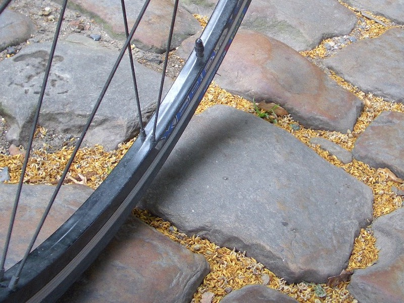
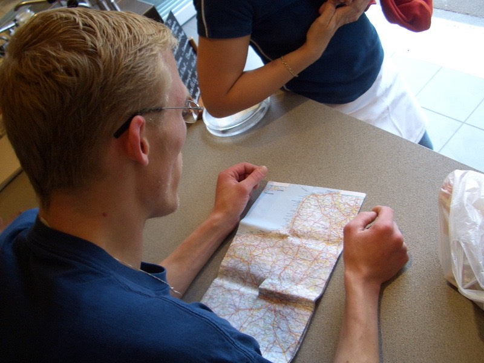
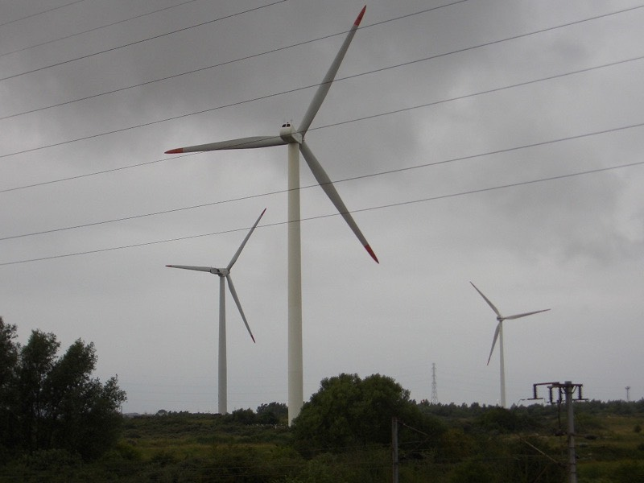
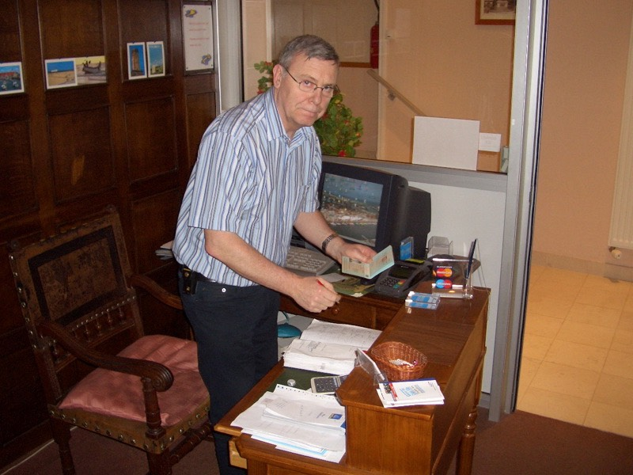

明明十二點多就早早就寢了，但隔天早上居然睡到超過九點才起床。
一天睡得比一天還晚，有點糟糕@@"
起床後發現眼睛沒有前幾天那麼樣佈滿血絲，狀況好很多。
昨天不只洗了襪子，連內褲都拿去洗，一併晒在窗口風乾∼
東西收拾一下，下去餐廳準備牽腳踏車的時候，發現店員又換人了。
早班跟晚班完全不一樣的人，昨天是弓箭手奧蘭多布魯，今天早上換成了一個老先生。
我說要去地下室牽我的腳踏車，他一臉茫然的樣子，看來早晚班並沒有交接到我的事情 /_\
但他還是讓我下去地下室，可是下去後發現找不到腳踏車。
這下可好了！昨天店員才說我的腳踏車很讚，該不會連夜就拿回家騎了吧？
爬回一樓表示我的腳踏車不見了，昨天明明還在底下的。
比手畫腳加上兩句破法文，他總算聽懂我的意思，然後從廚房裡頭將車牽出來。
今天的天氣一樣好冷，大概不到20度了，除了批上外套之外，連長袖都加上了。
十點離開餐廳，準備離開里耳往北前進。
里耳這個城市，昨天光是想辦法以不走高速公路的方式進來，就讓我吃足了苦頭。
今天要離開里耳，也一樣的不容易，旅館外面是一個十字路口，隨邊猜一個方向走。
不論我走哪一個方向，結局都是一樣的，通往高速公路。
讓我像鬼檔牆一樣，一直在餐廳前騎過來又騎過去。
等其中比較像是馬路的三個路口通通試過之後，只剩下那種一堆小學生在郊遊的公園路還沒走。
這種地方真的能夠離開里耳嗎。以非常懷疑的心情往前移動。

果然，跑到一個叫做『CITADELLE』的軍事基地。
警衛先把我檔下來，說這邊禁止通行，問我想要幹嘛？
我說我只是要離開里耳呀 T_T
很好心的警衛開始跟我一起研究地圖，一邊跟我解釋要怎麼走，一邊還要盡他衛兵的職責，
當有軍車進出時，他得放下柵欄，跟長官敬禮問好，然後繼續跟我研究地圖。
看到他可愛的模樣，就想到自己當兵時站衛兵的時候。
雖然聽的不是很懂他的意思，但他很肯定的說照他說的方式走，一定可以離開里耳。
往回走到一條林陰大道，很幸運的看到地圖，紅點點就是我的所在地。
我只要沿著河旁的黃色道路，走到左上角，就可以離開里耳了。
中間那個紅色五角形的地方就是剛剛誤闖進去的設施。
警衛教的這條路，可真不是普通的小條。

越走越覺得有點扯，怎麼會非得走這樣的路才能離開里耳呢？
不過風景真的是美麗到一個境界，好多的人在慢跑跟遛狗。
國外的狗也比台灣的狗幸福太多了，能在廣大的戶外跑來跑去，不用整天關在大廈籠子裡頭。
路走到底（鐵絲網擋住）從旁邊的鐵門出去，爬上雜草的斜坡，總算看到可以稱為馬路的東西。
順著路走，就這麼離開里耳了（快要成為我的惡夢）。
中午將近十一點才離開里耳，今天要往北騎至少一百公里，不知道能不能順利騎完。

先想辦法搞清楚自己在哪再說，看到一家咖啡館，想說問路兼吃早餐。
結果咖啡館真的只有賣咖啡，還有成堆成堆各式各樣的樂透（LOTO），很想買一張試手氣。
雖然我什麼都沒買，但店員還是好心的跟我說了大概的方向。
走到底，看到一家飄著薯條味道的速食店，這時才想到，都快中午了，什麼都還沒吃呢。
點了一份炸薯條（2歐元）。
還有一份三明治（生菜、沙拉、起司、火腿、酸黃瓜，3歐元）。
這就是我的午餐了∼拿出地圖一口氣問清楚今天要走的路，店員幫忙傷腦筋。
最後拿原子筆在地圖上標出了我的所在位置，以及今天一口氣要走路線和會經過的城鎮。
D933公路，直直走∼然後就看著辦吧，再遠他也不知道怎麼跟我說明了。

其實最短又最簡單的走法，就是上A25高速公路，里耳直達加萊。
無奈腳踏車不能上A開頭的公路，只好不斷的在D開頭的小路中切換，考驗著研究地圖的功力。
一邊騎車一邊啃我的三明治，酸黃瓜酸到不行，再配上番茄醬，除了酸還是酸，
快要吃不出其他東西的味道了，挑出火腿單獨吃，味道好好呀∼
中午十二點十五分，到了第一個城鎮，ARMENTIERES，參觀的太高興，差點又找不到D933公路。
有一家麵包店賣的都是巨大尺寸的麵包，比籃球還大顆，大概有正常麵包的30倍大，相當壯觀。
稍作停留後，轉往BAILLEUL走，下午一點就在這邊發現了一個很實用的地圖。
標示了今天要走了路線及道路名稱，趕快多看幾眼，筆記先做起來，今天應該不會迷路的那麼慘了。
搞清楚的結果如下，先走D933，然後接D37到STEENVOORDE。
再轉D18到WORMNOUG，最後走D916，就可以接到N1，N1再轉D940。
就這麼九彎十八拐的轉溫，換路線。以能找到路感到慶幸。
中古世紀的護城河
路上有風力發電機（應該是吧？）

還有高壓電線塔，不斷的發出負載過重之類的不吉利聲音。
路上看到可愛的小鴨子。
養雞場有好幾百隻的雞，雞可能是因為怕冷，在地上挖了洞把自己埋進去。
法國的十字路口，很少設紅綠燈，就用圓環來代替，而圓環中間就是各式各樣的佈置。
開始安慰自己，反正走高速公路那麼無趣，也沒有風景人文。
不如多走小路，多去幾個城鎮參觀參觀。
下午四點二十分。抵達靠海的城市DUNK，跟台灣的基隆一樣，雨下個不停。
一到DUNK。雨衣就乖乖的穿起來，iPod也在這個時候沒電了。
昨天睡覺前忘了充電，想說應該可以連續聽兩天吧，結果還是勉強了一點。
淋了一小時的雨，雖然有穿雨衣，但是好冷唷 >"<
若要繼續往加萊騎，未免也太辛苦.....淋雨騎車，體力都差點耗光了。
一路走D940，再穿過幾這小鎮。就算不走N25，還是可以到DUNK的。
晚上五點半，看到背包因為剛剛淋雨有點溼，希望裡面的東西安然無恙。
晚上大約七點多一點到達加萊。
先去快餐店找東西吃，填飽肚子，饑寒交迫的很，今天吃法國的鹽酥雞，炸薯條-1.5歐元。
超大根的炸熱狗-2歐元，炸雞肉串（裡面還有洋蔥跟不明物）-2.5歐元。
邊騎車邊吃，準備找今晚的落腳地。
連問了兩家都是客滿。地圖上有旅館的標誌，跟著走的結果是一間三星級的旅館。
進出參觀一下高級旅館的滋味如何，順便問一下價錢能不能接受。
結果價錢不是問題，問題是根本就已經客滿了！
旅館的小姐說，現在加萊『所有的』旅館都已經客滿了，沒房間了。
從背後身起一股濃濃的寒意，難道今晚要露宿街頭了嗎？
小姐很好心的問我說是開車來的嗎？
我說是騎腳踏車，她也只能聳聳肩，露出無奈的微笑。
馬上出去牽起腳踏車，要是真的找不到旅館的話，就要趁天還沒黑趕快往下個城鎮移動。
結果轉角又看到一家旅館，進去裡頭，櫃台一個人都沒有，一種收工打烊的感覺。
大聲的說了兩聲晚上好∼！才總算有人出來，問說還有房間嗎？抱著最後一絲的希望.....

答案是有房間的，一晚32歐元。 T_T好恐怖唷，三顆星的小姐妳嚇到我了。
FCR1停在旅館附設的停車場裡，客人停轎車一晚要4.5歐元，停腳踏車則免費。
晚上八點四十找到落腳處，有點小晚。
進房間之後，包包果真沒有漏半滴雨水，沒有令我失望，但感覺還是有點溼氣。
保險起見，把包包裡所有的東西都拿出來風乾一下。
不希望因為今天的淋雨騎車，讓包包裡的東西都發霉。
今天好累喔∼騎了一百四十幾公里。
把iPod都聽到沒電了，蘋果自己的廣告就很誠實，聽15小時，就掛點了。
靠在床上打字打著打著就睡著了，真的好累唷 @@"
把iBook放到旁邊，先睡上一大覺再說吧∼